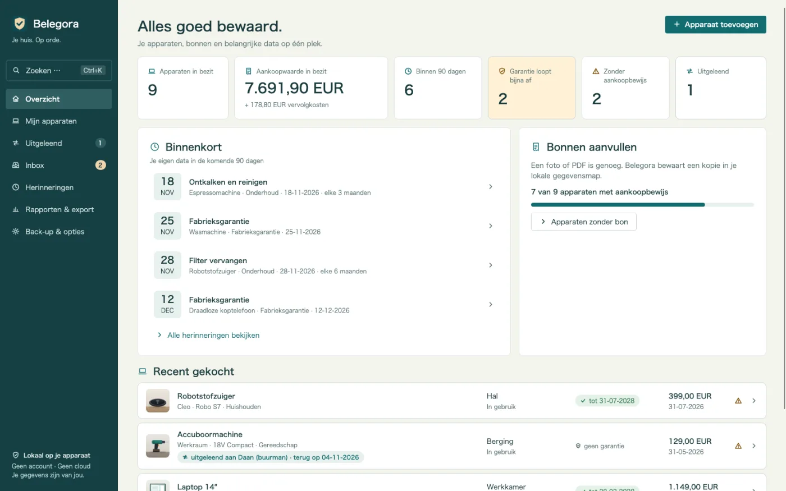
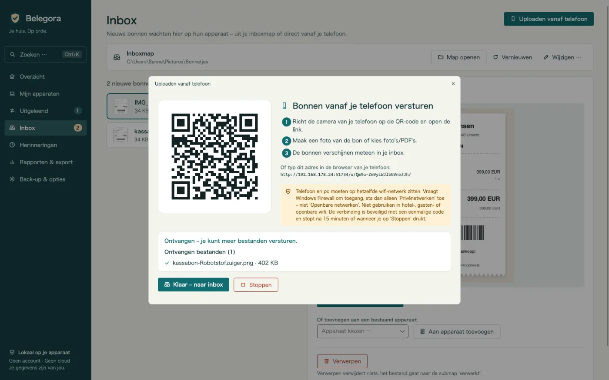
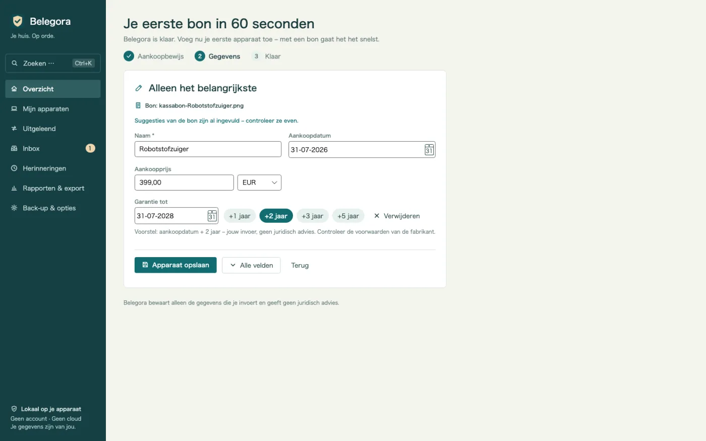
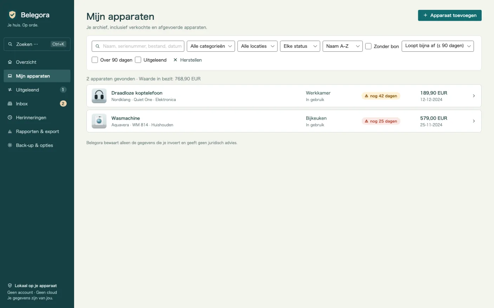
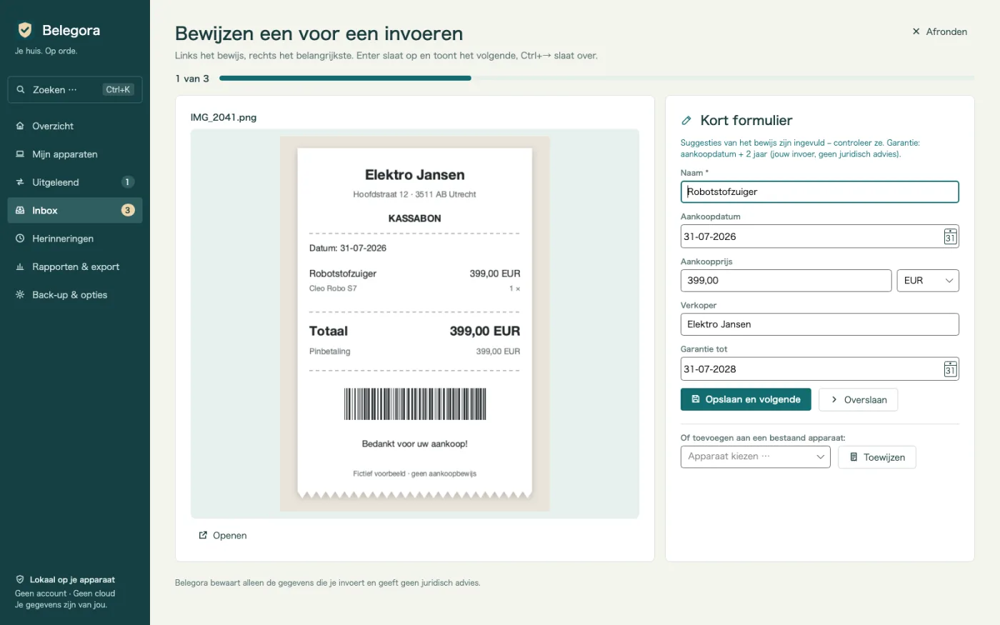
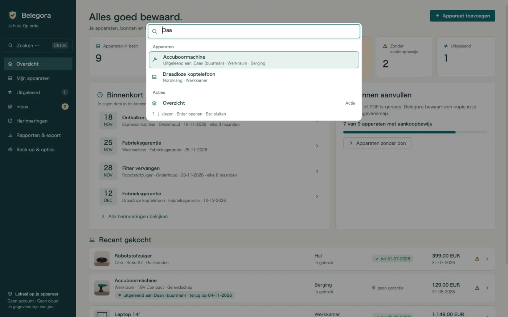
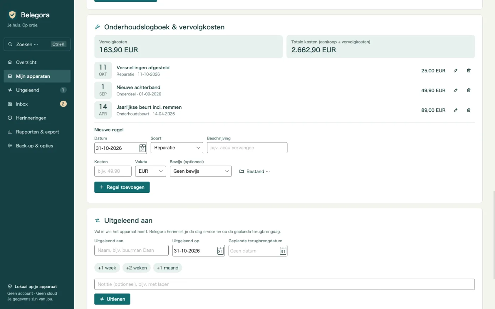
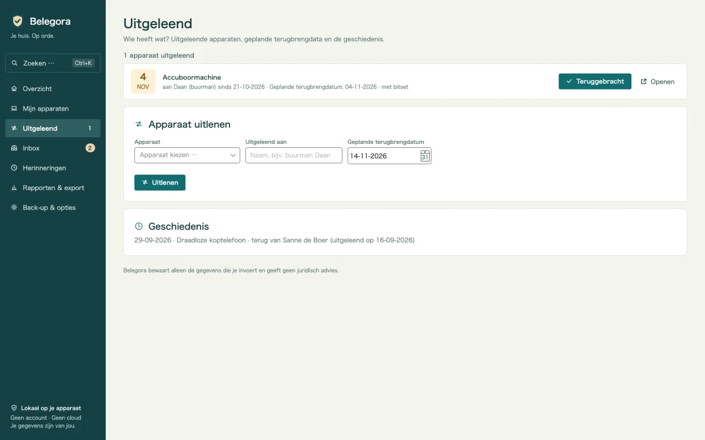
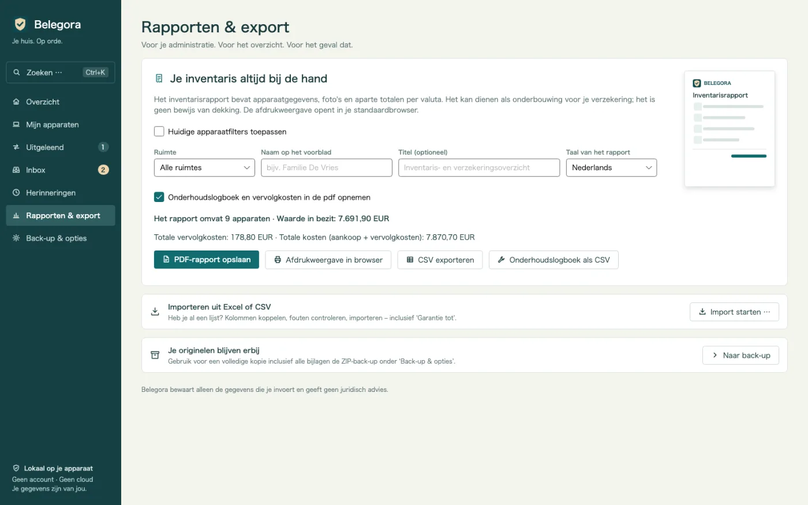
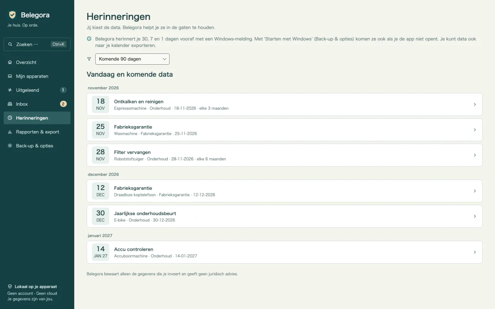

Herinnering vóór je termijnen
Garantie, retour, verzekering, onderhoud: Belegora toont een Windows-melding zoveel dagen vooraf als je wilt.
Garantie- en bonnenarchief voor Windows
Accu na 20 maanden kapot? Bon, serienummer en garantiedatum in seconden gevonden. Bonnen van je telefoon via QR-code, herinneringen vóór je eigen termijnen en een pdf voor de verzekering. Offline, zonder account.

Belegora doet het saaie werk: bonnen verzamelen, gegevens voorstellen en je herinneren vóór je termijnen.
Garantie, retour, verzekering, onderhoud: Belegora toont een Windows-melding zoveel dagen vooraf als je wilt.
Scan de QR-code en upload een foto in de browser. De bon komt via je wifi in de inbox. Zonder kabel, cloud of app.
Aankoopdatum, bedrag en winkel worden uit de bon voorgesteld. Controleren, opslaan en het apparaat staat er met één klik.
De apparatenlijst toont in één oogopslag waar de garantie bijna afloopt, met de kolom ‘Garantie tot’.
Vind elk apparaat op naam, serienummer, verkoper, label, bestand of lener, plus acties zoals de pdf of een back-up – met pijltjestoetsen en Enter.
Veel bonnen na elkaar: links de bon, rechts het korte formulier met suggesties. Enter slaat op, Ctrl+→ slaat over.
Leg reparaties, onderhoudsbeurten, onderdelen en accessoires met kosten vast. Vervolgkosten en totale kosten per apparaat, ook in de pdf en als CSV.
Wie heeft de boormachine? Uitgeleend aan, sinds wanneer, geplande terugbrengdatum – met herinnering en geschiedenis. Plus één keer per week een overzicht.
Na waterschade of inbraak: rapport met voorblad, overzicht per ruimte, totalen, foto's en bonnen. Rapporttaal vrij te kiezen.
Neem je bestaande lijst over met kolomtoewijzing. Exporteer naar CSV en termijnen naar ICS voor elke agenda.
Back-ups inclusief bijlagen gaan automatisch. Herstellen toont eerst een voorbeeld.
Geen cloud, account, reclame of tracking. Je gegevens blijven op je pc.
Goed om te weten: Belegora bewaart je gegevens en termijnen en geeft geen juridisch advies. Meldingen verschijnen zolang Belegora draait; de app kan desgewenst met Windows starten. Tekstherkenning gebruikt Windows-OCR en vereist het bijbehorende Windows-taalpakket.
Stuur een foto via QR-code, zet een bestand in de inboxmap of importeer je Excel-lijst.
Belegora stelt datum, bedrag en winkel voor. Apparaat aanmaken, termijn en voorlooptijd kiezen.
Belegora herinnert je op tijd. Bij schade maak je het verzekeringsrapport in minuten.









€ 14,99
eenmalig, prijs in Duitsland
Nu beschikbaar in de Microsoft Store. Prijzen kunnen per land verschillen.

Alleen jij. Belegora stuurt geen gegevens naar ons of derden; geen account, geen telemetrie. Uploaden via de telefoon werkt alleen in je lokale netwerk.
Lokaal op je pc in de app-gegevensmap (%LOCALAPPDATA%\MinhStudios\Belegora), samen met kopieën van bijlagen en de automatische back-ups.
Maak in Belegora een back-up (zip met alle gegevens en bijlagen), kopieer die naar de nieuwe pc, installeer Belegora en herstel de back-up. Het voorbeeld toont wat wordt teruggezet.
Nee. Belegora bewaart je gegevens en termijnen en geeft geen juridisch advies. Of je recht hebt, bepalen winkel, fabrikant of verzekeraar.
Meldingen verschijnen zolang Belegora draait; de app kan met Windows starten. Je kunt termijnen ook als ICS naar je agenda exporteren.